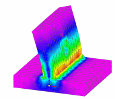
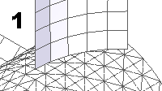
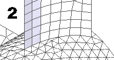
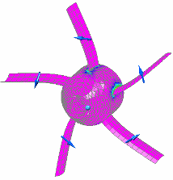
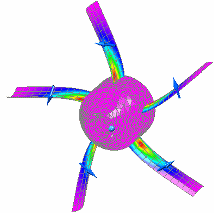

Assembly best practices for simulation
When simulating assembly models in Solid Edge Simulation, take advantage of the following best practices:
In an assembly model, surface features created using the commands on the Simulation Geometry tab are listed on the Simulation pane under the Simulation Geometry node. Simulation Geometry is available only when working in Solid Edge Simulation.
Creating surface geometry in an assembly
Often you need to simulate a model using surfaces on part or sheet metal components in an assembly document for which you do not have both read and write permissions. Also, you need to maintain associativity between the surfaces and the part faces from which they were created.
In the Assembly environment, you can use the Simulation Geometry tab→Surfaces group→Copy Surface command to copy faces from part and sheet metal components.
You can manipulate the surfaces created in the assembly model, so that they can be stitched together, or appropriate boundary conditions can be applied to them. These surfaces can then be stitched together into one continuous surface.
Also, you can create mid-surfaces for sheet metal components in the Assembly environment, even when you do not have write access to the sheet metal document. This mid-surface is associative to the sheet metal model.
Using Simulation Geometry tab commands
In the Assembly environment, you can use the following commands on the Simulation Geometry tab→Surfaces group to modify surfaces copied within the assembly.
-
Mid-Surface
Creates a mid-surface on any sheet metal part within the assembly. This works the same as the command in Sheet Metal; see Mid-surface command.
-
Copy
Creates a copy of any surface from parts and subassemblies. This works similar to the Copy Surface command in the Part environment.
-
Offset Surface
Creates a construction surface by offsetting a face from parts and subassemblies. This works similar to the Offset Surface command in the Part environment.
-
Trim Surface
Trims one or more surfaces along the input element you define. This works similar to the Trim Surface command in the Part environment.
To learn how to trim sheet metal, see the tutorial,Simplify a sheet metal assembly.
-
Extend Surface
Extends a surface along one or more edges you select. This works similar to the Extend Surface command in the Part environment.
To learn how to extend sheet metal, see the tutorial,Simplify a sheet metal assembly.
-
Split Face
Splits one or more surfaces using an element you define. This works similar to Split Face command in the Part environment.
-
Offset Edge
Offsets the selected edges to create an imprint of them on a part or surface by a given distance and direction. This works similar to the Offset Edge command in the Part environment.
-
Stitched Surface
Stitches together multiple, adjacent construction surfaces to form a single construction surface feature. This works similar to the Stitched Surface command in the Part environment.
-
Show Non-Stitched Edges
Temporarily highlights the edges on a construction surface which have not been stitched to an adjacent surface. This works similar to the Show Non-stitched Edges command in the Part environment.
-
Unite Bodies
Combines surfaces, solids, and design bodies within an assembly, document into one body. Also joins disjoint geometry in a part or sheet metal document. See Uniting bodies.
To learn how to use united bodies, see the tutorial,Simplify a sheet metal assembly.
-
Recover Bodies
Separates the surfaces and solids in a united body into their original elements. See Recovering bodies.
Uniting bodies
A united body produces a continuous mesh. You can use the Unite Bodies command in assemblies as well as in part and sheet metal documents.
-
In an assembly document, the Simulation Geometry tab→Surfaces group→Unite Bodies command
 combines the surfaces, solids, and design bodies into one body. United bodies eliminate
the need to define the assembly connectors that produce a continuous mesh.
combines the surfaces, solids, and design bodies into one body. United bodies eliminate
the need to define the assembly connectors that produce a continuous mesh. -
The Unite Bodies command also is available on the Simulation tab→Define group in part and sheet metal models to create a single merged body from the individual surfaces and solids. When you create a new study in a part or sheet metal document that contains disjoint bodies, you can use the United Bodies command to join the bodies for analysis.
You can create a united body from geometry that consists of manifold (unshared) topology, such as weldment assemblies, as well as non-manifold (shared) topology.

United bodies can be very useful when creating mid-surface models with T-shaped junctions that result in non-manifold (shared) topology. These are models where shell elements (2D) and solid elements (3D) need to be connected, and portions of the shell mesh are embedded in the solid mesh.
-
To learn how to use united bodies, see the tutorial Simplify a sheet metal assembly.
-
Because united bodies cannot be modified, you should create them as the last step in geometry simplification. If you subsequently need to modify a united body, use the Recover Bodies command, modify the parts as appropriate, and then recreate the united body.
You can change the default color used to display bodies on the Colors page (Solid Edge Options dialog box). The united body color does not override a face style color applied to the model.
Recovering bodies
The Simulation Geometry tab→Surfaces group→Recover Bodies command  reverses the results of the Unite Bodies command, resulting in the recovery of original bodies and surfaces.
reverses the results of the Unite Bodies command, resulting in the recovery of original bodies and surfaces.
The Recover Bodies command is best used when a united body needs to be modified.
Preparing for a united body
Before creating a united body from a surface and a solid, you should first extend the surface into the solid. This is because the node of a 2D element has 6 DOF (3 translational and 3 rotational), and the node of a 3D element has 3 DOF (3 translational only). For this reason, geometry created without an extension (1) will not produce merged coincident nodes. This can result in inaccurate results.

A mesh on surfaces extended into the solid is shown in (2); observe that the mesh elements from the solid and surfaces have coincident nodes.

Meshing models with united bodies
When creating a study for a model that contains united bodies, use the following mesh types:
-
Mixed and General Bodies (assemblies)
-
General Bodies (part and sheet metal)
Displaying results for united bodies
In the Simulation Results environment, you can display results for the 2D shell geometry or the solid geometry, but not both at the same time. The default results display is to show Von Mises stress for the solid elements.

To display the results for the shell geometry, you can change the selection in the Results Component list to Plate Top Von Mises Stress.

How do I
Override mesh propertiesLearn more
Using a simplified modelSpecifying material properties accurately
Offsetting edges around holes, openings, and fasteners
Removing geometry flaws and small entities
Optimizing study results
Simulation materials and properties
Mesh material properties